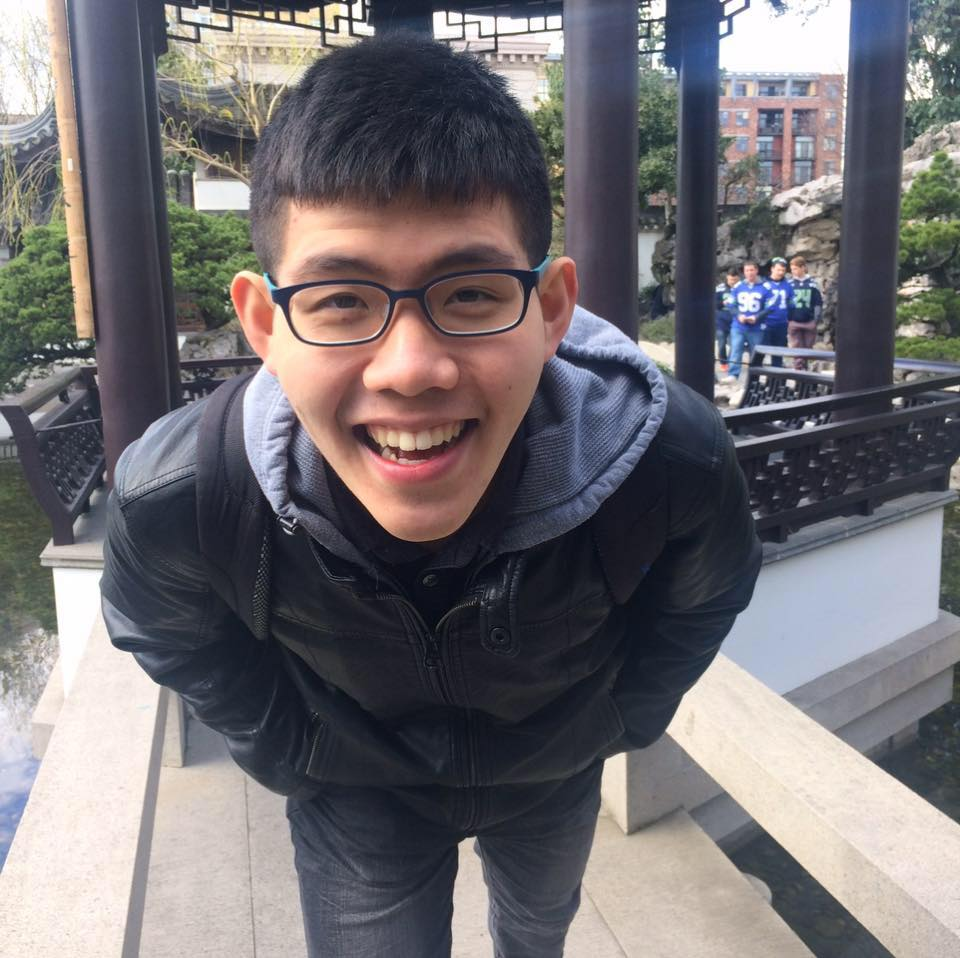
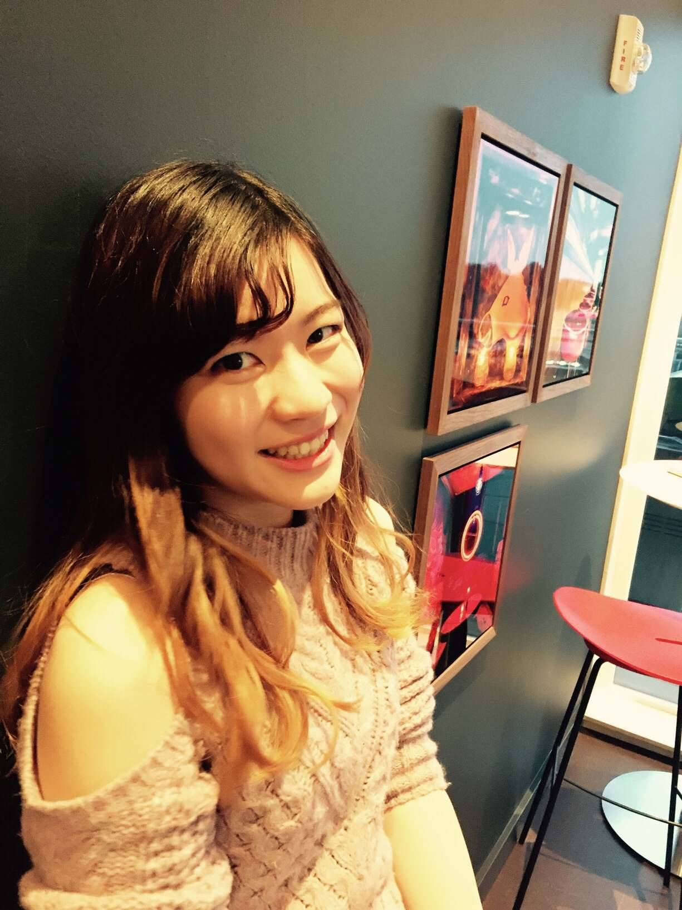
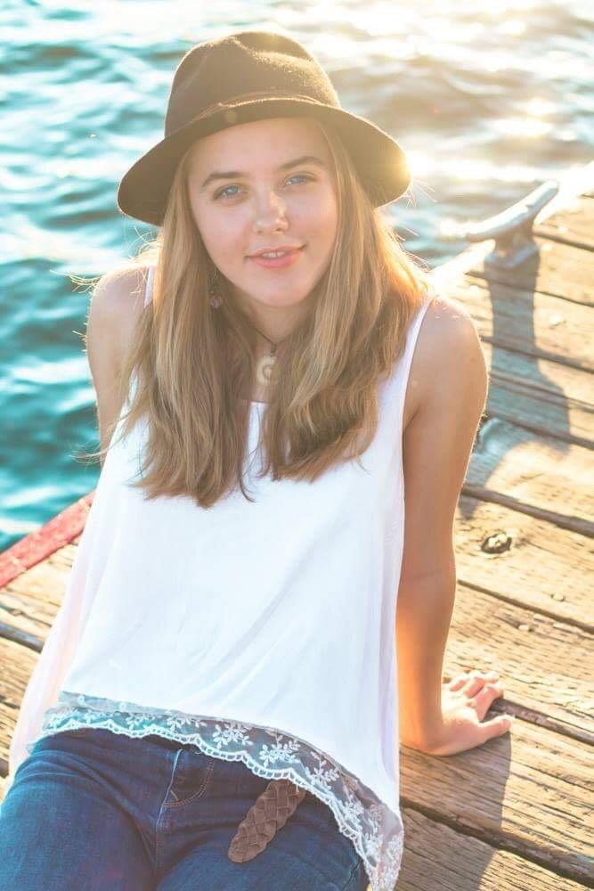

DIS
play
Collaborative play environment for all kids


Collaborative play environment for all kids
I'm currently a junior studying BIOE at University of Washington. Originally from Taiwan, I immigrated to America at the age of 15 in pursuit of a more well-rounded education. I joined HuskyADAPT because I wanted to learn valuable, out-of-classroom skills and apply what I know to improve the well-being of individuals with disabilities. I enjoy playing badminton and listening to music during my free time.
I’m a junior in Human Centered Design and Engineering in the University of Washington. I am an aspiring UX designer in the tech and media industry where I want to help create an enjoyable user experience. Originally from Tokyo Japan now in Seattle. I believe that every child has a right to play without facing barriers by their abilities. Through this project I hope we can provide a space that all children can feel included without feeling left behind.
Amy is an aspiring physician and undergraduate student at the University of Washington. She has loved play, in all its forms, since she was young and hope to make it available to people of all abilities. As someone who was homeschooled She also enjoys outdoor activities such as rock climbing, snowboarding, and volunteering for King County Search and Rescue and Washington State Animal Response Team. In addition she is a project manager of a Bioengineering Without Boarders team and an EMT.
Hi! I'm currently a third year student studying industrial design with a strong interest in interaction design. When i'm not working on school work, I like to spend my time constructing models, playing tennis/volleyball, or working on my latest personal projects. Super excited to work with the team and looking forward to what we'll create!